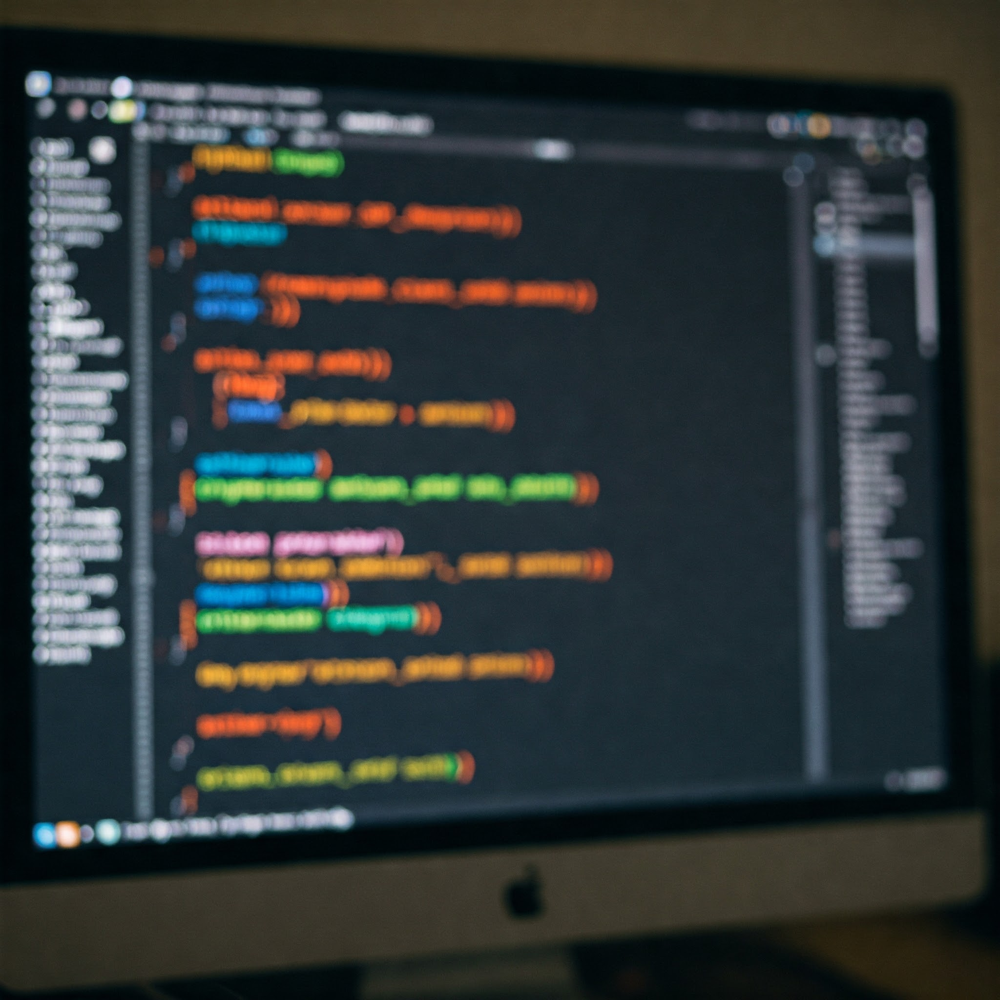

Enseñanza Media / Secundaria
· Finalizo mis estudios escolares el año 2014 y de inmediato, como ya me
interesaba el área de Diseño, decido Comenzar a estudiar Diseño Gráfico, sin imaginar lo que
allí aprendería un poco más adelante
· Debo mencionar que por conocimientos de internet, ya algo tenía la idea de como se construye
un
sitio web
Estudios Superiores
Durante el proceso de mis estudios, recuerdo que durante el segundo año tuve mi primera clase de Diseño Web y sin ni siquiera imaginar lo que ahí nos enseñarían, ví por primera vez como se ejecuta el proceso para crear un sitio web, puse toda mi atención en lo que era escribir codigo y terminé por enfocarme solamente en eso durante los años siempre hay un constante aprendizaje .
Academia Desafío Latam
Bueno, actualmente estoy cursando el Bootcamp de desarrollo Fullstack, en la academia, llevamos aproximadamente poco más de un mes y estamos finalizando el primer nmódulo donde hemos aprendido bastante, desde lo más básico para comenzar con nuestro desarrollo de sitios para la web. El material es demasiado bueno.
Por cosas de la vida e intentado solventar los gastos de mis estudios, comienzo a trabajar en la construcción en el año 2016. Con el tiempo me di cuenta que me gustaba lo que ahí hacía y decidí tomar un receso en mis estudios y dedicarme al cien en mi trabajo para poder desarrollarme y profesionalizar el oficio que allí aprendía. Durante los años, logré cumplir mi cometido y le di una seriedad a mi trabajo, por ende, desde ahí en adelante todo se a facilitado en cuanto a lo laboral se refiere. Mis años por este rubro me a vuelto una persona en un 100% responsable y dedicada a entregar con cariño su trabajo para los demás.
Last updated 3 mins ago

En el actual año 2025 decido entrar a estudiar la carrrera Desarrollo Fullstack en la Academia Desafio Latam. Debo señalar que experiencia laboral en este rubro no tengo, pero sí durante los años e realizado algunos cursos en internet para ir estando al tanto de las nuevas tecnologías y actualizaciones en los lenguajes HTML y CSS, siempre autodidácta tratando de aprender un poco más. Este desafio me lo estoy tomando demasiado enserio, y priprizando siempre que lo hago por un gusto real, me interesa demasiado aprender e intentar hacer lo mejor posible, esperando que con esfuerzo, dedicación y cariño se me puedan abrir puertas en un futuro.
Last updated 3 mins ago